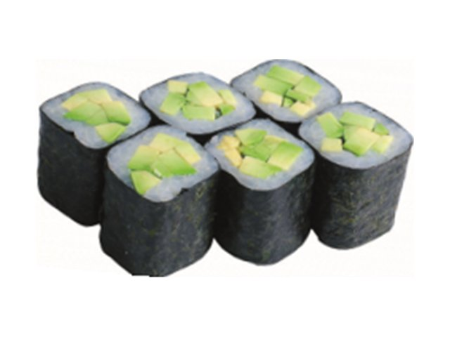

Авокадо
рис, авокадо
100 ₽
Нажмите на блюдо, чтобы посмотреть состав, КБЖУ и историю.

сырный суп с копчёной курицей, беконом, томатами черри и шампиньонами

корейский суп из лапши, мяса и овощей, подаётся тёплым

суп с лососем, креветкой, лапшой удон и овощами

сварена на свежем курином бульоне
суп из соевой пасты мисо с креветкой, водорослями вакаме, яйцом и луком порей
с лососем, морским окунем и креветками

яичная лапша, шампиньоны, яйцо
лапша удон, лосось, сливки, масло сливочное, лук зелёный, специи, грибы шампиньоны
суп с куриными сердечками и печенью, пшеничной лапшой, грибами и овощами
креветки, помидоры черри, грибы, яйцо перепелиное, куриное филе, бульон
пекинская капуста, морковь, мидии, креветки тигровые, кальмар, лосось, водоросли вакаме, лук порей
суп из лосося с водорослями вакаме, луком порей и рисом
суп с угрём, стеклянной лапшой, шампиньонами и яйцом
суп из говядины с овощами, стеклянной лапшой, грибами шитаки и яйцом
куриное филе в устричном соусе, обжаренное в кляре
филе лосося, соус терияки, лимон
лосось, шпинат, сливки, сливочный соус
свиной край фаршированный беконом, обжаренный в панировке, соус шашлычный
свиная вырезка, сыр, помидоры, лук зелёный, зелень
свинина, ананас, перец болгарский, лук порей в кисло-сладком соусе
свиные ребра в кисло-сладком соусе

курица, перец болгарский, морковь, лук репчатый в соусе терияки
говяжья вырезка, перец болгарский, цукини, баклажан, лук репчатый в пикантном соусе
утиная грудка, ананас, перец болгарский в кисло-сладком соусе
филе судака на картофеле, запечённое в сливочном соусе
обжаренный на гриле свиной край, подаётся со сливочно-медовым соусом
куриное филе, обжаренное в панировке, подаётся со спайси соусом
свинина, обжаренная с овощами в пикантном соусе
креветка, сливки, чеснок, морковь
лосось, сливки, икра лосося, лимон
судак, кляр, лимон
угорь, рис, соус кабаяки, кунжут
тигровая креветка, рис, сливки, соус Киккоман
лосось, окунь, капуста пекинская, шпинат, стружка тунца, сливки, рис отварной